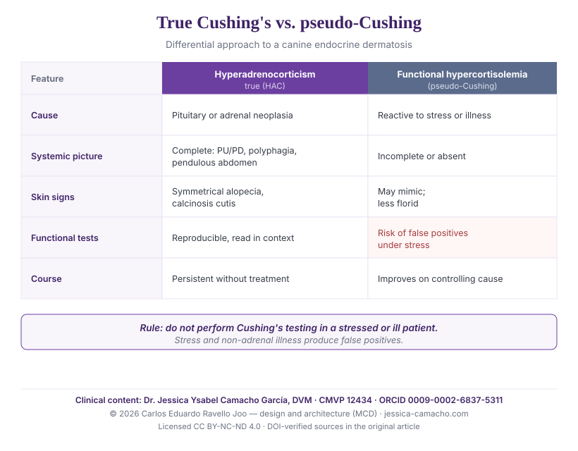

Canine hyperadrenocorticism and dermatology: cutaneous manifestations and the differential diagnosis between true Cushing's and functional hypercortisolemia
Abstract
Background. Hyperadrenocorticism (HAC) is among the endocrinopathies most frequently expressed through the skin; in a proportion of patients, skin lesions are the only presenting complaint.1 Sustained hypercortisolemia of non-adrenal origin —associated with stress or concurrent illness— can reproduce part of the picture and, in addition, alter the endocrine tests, posing a relevant diagnostic problem.2
Objective. To summarize the dermatological manifestations of canine HAC, their pathophysiological mechanism of cutaneous immunosuppression, and to propose a practical guide to the differential diagnosis between true Cushing's syndrome and functional hypercortisolemia (pseudo-Cushing).
Key points. HAC dermatosis is characterized by non-pruritic bilaterally symmetrical alopecia, thin and hypotonic skin, comedones, calcinosis cutis, hyperpigmentation, poor wound healing, and frequently recurrent opportunistic infections —pyoderma, adult-onset demodicosis, malasseziosis— due to glucocorticoid immunosuppression.134 The diagnosis rests on integrating systemic and cutaneous signs with functional tests read in context; tests must not be performed in stressed or intercurrently ill patients because of the risk of false positives.2
Conclusion. In the dog with a compatible endocrine dermatosis, distinguishing true HAC from pseudo-Cushing is a clinical exercise before a laboratory one: it depends on recognizing the complete picture and respecting the correct diagnostic sequence.
Keywords: canine hyperadrenocorticism; Cushing's syndrome; pseudo-Cushing; functional hypercortisolemia; endocrine dermatosis; bilaterally symmetrical alopecia; calcinosis cutis; adult-onset demodicosis; differential diagnosis.
1. Introduction: the skin as a window on the endocrinopathy
Starting point In canine hyperadrenocorticism, dermatological lesions may precede the classic systemic signs and even constitute the only presenting complaint. Recognizing the cutaneous pattern allows the endocrinopathy to be suspected before the syndrome is fully expressed.1
Endocrine dermatoses share a feature that makes them clinically deceptive: their course is chronic and their initial expression non-specific. HAC is a paradigmatic example. In a series of ten dogs, skin lesions were the only presenting sign of HAC, without the polyuria-polydipsia or polyphagia the clinician expects.1 This obliges keeping HAC within the differential diagnosis of any chronic, alopecic, non-pruritic dermatosis, even in the absence of the full systemic picture.
The aim of this review is twofold: to describe what the clinician looks for in the skin of the HAC patient, and to clarify how to distinguish true HAC from the functional hypercortisolemia that chronic stress or concurrent illness may generate —a distinction with direct therapeutic consequences.
2. Dermatological manifestations of hyperadrenocorticism
Cutaneous picture HAC dermatosis is typically a non-pruritic bilaterally symmetrical alopecia sparing the head and distal extremities, accompanied by thin, hypotonic skin, comedones, hyperpigmentation, poor wound healing and, in advanced cases, calcinosis cutis; non-pruritic pyoderma is a frequent finding.1
Chronic glucocorticoid excess acts on the skin on several planes at once: it arrests the follicular cycle in telogen —producing alopecia—, thins the epidermis and dermis, alters collagen synthesis, and impairs wound healing. The clinical result is recognizable:
- Non-pruritic bilaterally symmetrical alopecia, of truncal distribution, sparing the head and distal extremities.1
- Thin, hypotonic, poorly elastic skin, with prominent superficial veins and a tendency to bruising, especially noticeable at venipuncture.1
- Comedones and hyperpigmentation, particularly on the abdomen and friction zones.
- Calcinosis cutis: deposition of calcium salts in the dermis (frequent on the dorsal neck and groin), a less common but highly suggestive sign of HAC; in a series of 46 cases of canine calcinosis cutis, hyperadrenocorticism —endogenous or iatrogenic— was a predominant association.17
- Poor wound healing and non-healing wounds, a direct sequela of the glucocorticoid effect on tissue repair.1
- Recurrent skin infections —non-pruritic pyoderma, malasseziosis— due to immunosuppression (see section 3).
A clinically relevant point: the skin lesions of HAC may take several months to resolve after treatment is started and, on occasion, deteriorate transiently before improving.1 The absence of an immediate response does not invalidate the diagnosis.
3. Cutaneous immunosuppression and opportunistic infections
Mechanism Glucocorticoid excess depresses cell-mediated immunity and predisposes to opportunistic skin infections. The onset of adult-onset demodicosis is a sentinel marker: it is significantly associated with hyperadrenocorticism and hypothyroidism, and therefore mandates investigating an underlying endocrinopathy.3
Immunosuppression is, alongside alopecia, the most important cutaneous consequence of HAC. Cortisol attenuates the cell-mediated immune response and, with it, the control of the resident skin flora. On that basis opportunistic colonizers establish themselves: the pyoderma of HAC is interpreted as the combined consequence of the cutaneous changes and the immunosuppressive effect of glucocorticoids.1
The sentinel example is adult-onset demodicosis. In a series of 122 dogs, about 40% had a concurrent disease, with a statistically significant association with hyperadrenocorticism and hypothyroidism; the authors recommend evaluating these patients systemically.3 Analogously, consensus guidelines establish that effective treatment of Malassezia dermatitis requires correcting the predisposing disease, hyperadrenocorticism among them.4 Hair cortisol, validated as a biomarker of prolonged glucocorticoid exposure, offers a complementary measure of the phenomenon —although without an individual diagnostic cut-off.5 It is also worth recalling that HAC itself can depress thyroid hormone concentrations (non-thyroidal illness syndrome), adding a further layer of confusion to the endocrine interpretation of these patients.6
4. True Cushing's versus functional hypercortisolemia (pseudo-Cushing)
Key concept Chronic stress and non-adrenal illness raise cortisol and can reproduce part of the cushingoid picture, but they do not constitute true hyperadrenocorticism. The difference is mechanistic —true HAC almost always has an organic cause (pituitary or adrenal neoplasia)— and it has diagnostic consequences: stress produces false positives on the functional tests.2
The term pseudo-Cushing describes a functional hypercortisolemia, reactive to a stimulus (sustained stress, systemic illness), without primary adrenal or pituitary lesion. Its clinical relevance is twofold. First, it reproduces skin signs compatible with HAC, which may prompt suspicion. Second, and more importantly, it alters the screening and confirmatory tests: the ACVIM consensus explicitly warns that HAC testing must not be performed in a stressed animal or one with intercurrent disease, because of the risk of false positives.2
The practical consequence is a rule of sequence: before testing, the patient should be clinically stable and, as far as possible, free of acute stress and active non-adrenal disease. A positive result in a stressed patient does not confirm HAC; it requires re-evaluating the context.
5. Practical guide: what to look for in the suspected patient
Clinical application Facing a chronic, alopecic, non-pruritic dermatosis, suspicion of HAC is built on the coexistence of compatible cutaneous signs and systemic signs of hypercortisolism. The presence of the complete picture points to true HAC; its absence, in a stressed or ill patient, to functional hypercortisolemia.
5.1. Physical findings to examine in the consultation
In a suspected patient, the examination should document the following signs in a directed manner:
- Dermatological: non-pruritic bilaterally symmetrical alopecia (trunk, sparing head and extremities); thin, hypotonic skin with prominent veins; abdominal comedones and hyperpigmentation; calcinosis cutis (firm plaques or nodules, sometimes ulcerated); recurrent pyoderma or demodicosis; slow-healing wounds; spontaneous bruising or bruising after venipuncture.13
- Systemic: polyuria-polydipsia; polyphagia; abdominal distension / pendulous abdomen; panting at rest; weakness and muscle atrophy; lethargy; hepatomegaly on palpation.
The interpretive key is concordance: the more systemic signs accompany the dermatosis, the higher the probability of true HAC. A compatible dermatosis in isolation, in a dog that is otherwise systemically healthy but under stress or illness, should first prompt consideration of functional hypercortisolemia.
5.2. Orienting differences between true Cushing's and pseudo-Cushing
| Element | True hyperadrenocorticism (HAC) | Functional hypercortisolemia (pseudo-Cushing) |
|---|---|---|
| Cause | Organic: pituitary (pituitary-dependent) or adrenal neoplasia; iatrogenic. | Reactive to sustained stress or non-adrenal illness; no primary lesion. |
| Systemic picture | Complete and progressive: PU/PD, polyphagia, pendulous abdomen, muscle atrophy. | Incomplete or absent; the signs of the stressor or underlying disease predominate. |
| Skin signs | Established endocrine dermatosis: symmetrical alopecia, calcinosis cutis, recurrent infections.17 | May mimic the picture, usually less florid and without typical calcinosis cutis. |
| Functional tests | Compatible, reproducible pattern (LDDST, ACTH stimulation, UCCR), interpreted in context.2 | High risk of false positives; therefore must not be performed under stress or active illness.2 |
| Course | Persistent; does not resolve without targeted treatment. | Tends to normalize on controlling the stressor or resolving the underlying disease. |
| Imaging (adrenal ultrasound) | May show bilateral adrenomegaly or a unilateral adrenal mass. | No attributable structural adrenal findings. |

5.3. Suggested diagnostic sequence
The sequence that protects the patient from overdiagnosis is ordered: (1) clinical suspicion based on the concordance of cutaneous and systemic signs; (2) stabilization and control —as far as possible— of stress and intercurrent illness before testing; (3) functional screening and confirmatory tests interpreted in context, never in isolation;2 (4) differentiation of the pituitary-dependent form from the adrenal form by imaging and complementary tests once HAC is confirmed. A laboratory result that does not match the clinical picture demands re-evaluating the context before treating.
6. Clinical implications
Conclusion In endocrine dermatology, distinguishing true Cushing's from pseudo-Cushing is above all a clinical exercise: it depends on recognizing the complete picture and respecting the diagnostic sequence, not on a single test.
Hyperadrenocorticism belongs to the group of systemic diseases that announce themselves in the skin before becoming evident elsewhere in the body. Recognizing its cutaneous pattern —non-pruritic symmetrical alopecia, calcinosis cutis, recurrent opportunistic infections— allows it to be suspected in time. But the same hypercortisolemia that damages the skin may originate in stress or in another disease, reproduce part of the picture, and falsify the tests. The distinction between one situation and the other is not delegated to the laboratory: it is built from the history, the examination, and the correct sequence. This review is complementary to the owner-directed analysis on the dog that licks and loses hair, where the cascade from chronic stress to the skin is addressed.
References
Peer-reviewed veterinary literature. Each reference was independently verified at its original source (PubMed / publisher).
- Zur G, White SD (2011). Hyperadrenocorticism in 10 dogs with skin lesions as the only presenting clinical signs. J Am Anim Hosp Assoc 47(6):419-427. doi:10.5326/JAAHA-MS-5623 · PMID 22058349
- Behrend EN, Kooistra HS, Nelson R, Reusch CE, Scott-Moncrieff JC (2013). Diagnosis of Spontaneous Canine Hyperadrenocorticism: 2012 ACVIM Consensus Statement (Small Animal). J Vet Intern Med 27(6):1292-1304. doi:10.1111/jvim.12192
- Pinsenschaum L, Chan DHL, Vogelnest L, Weber K, Mueller RS (2019). Is there a correlation between canine adult-onset demodicosis and other diseases? Vet Rec 185(23):729. doi:10.1136/vr.105388
- Bond R, et al. (2020). Biology, diagnosis and treatment of Malassezia dermatitis in dogs and cats: Clinical Consensus Guidelines of the WAVD. Vet Dermatol 31(1):28-74. doi:10.1111/vde.12809
- Park SH, Kim SA, Shin NS, Hwang CY (2016). Elevated cortisol content in dog hair with atopic dermatitis. Jpn J Vet Res 64(2):123-129. PMID 27506086
- Bolton TA, Panciera DL, Voudren CD, Crawford-Jennings MI (2024). Thyroid function tests during nonthyroidal illness syndrome and recovery in acutely ill dogs. J Vet Intern Med 38(1):111-122. doi:10.1111/jvim.16947
- Doerr KA, Outerbridge CA, White SD, Kass PH, Shiraki R, Lam AT, Affolter VK (2013). Calcinosis cutis in dogs: histopathological and clinical analysis of 46 cases. Vet Dermatol 24(3):355-361. doi:10.1111/vde.12026 · PMID 23565978

Dr. Jessica Ysabel Camacho García
ORCID 0009-0002-6837-5311 · Professional verification · Last reviewed: 19 June 2026